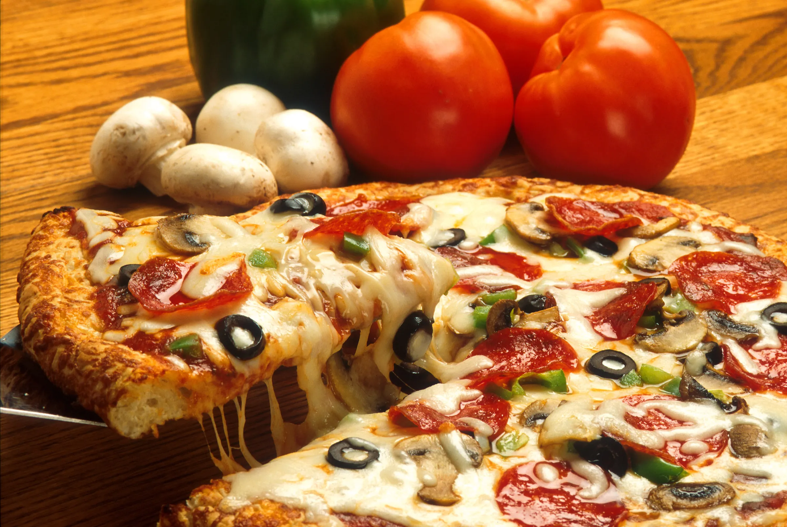
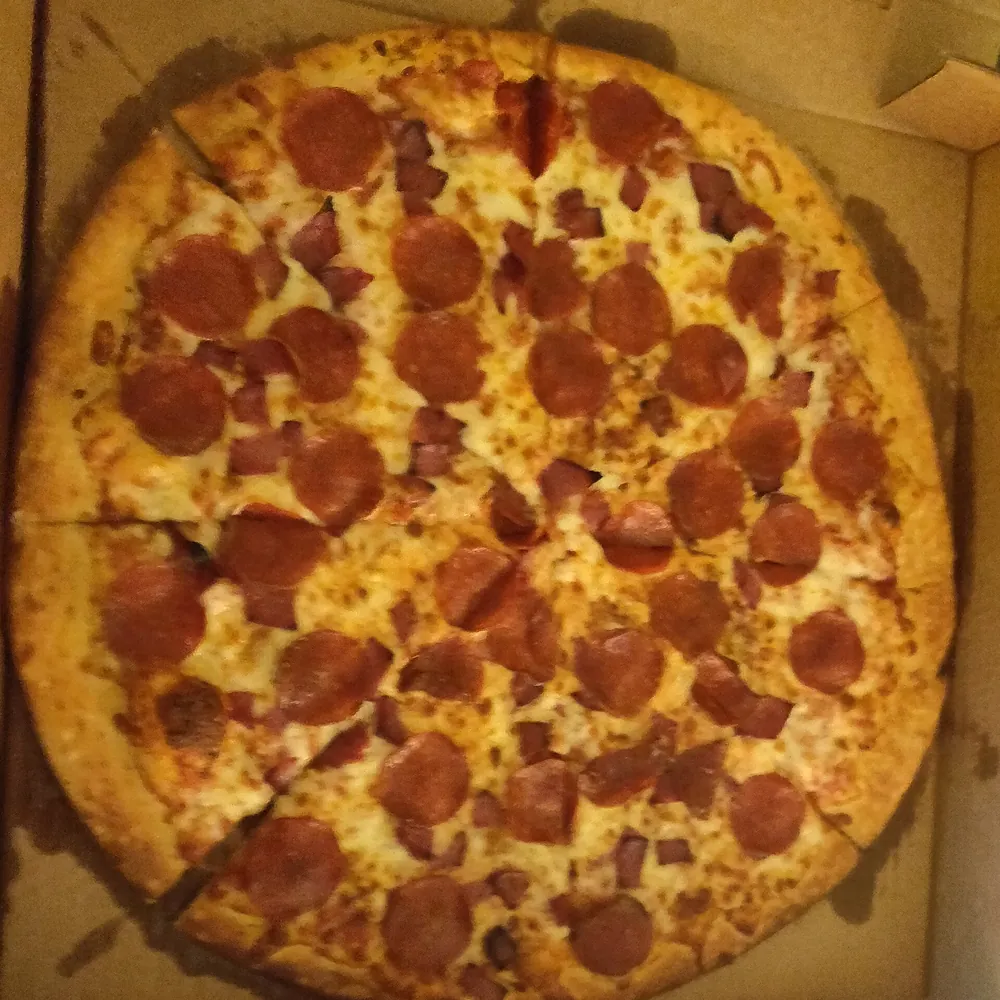
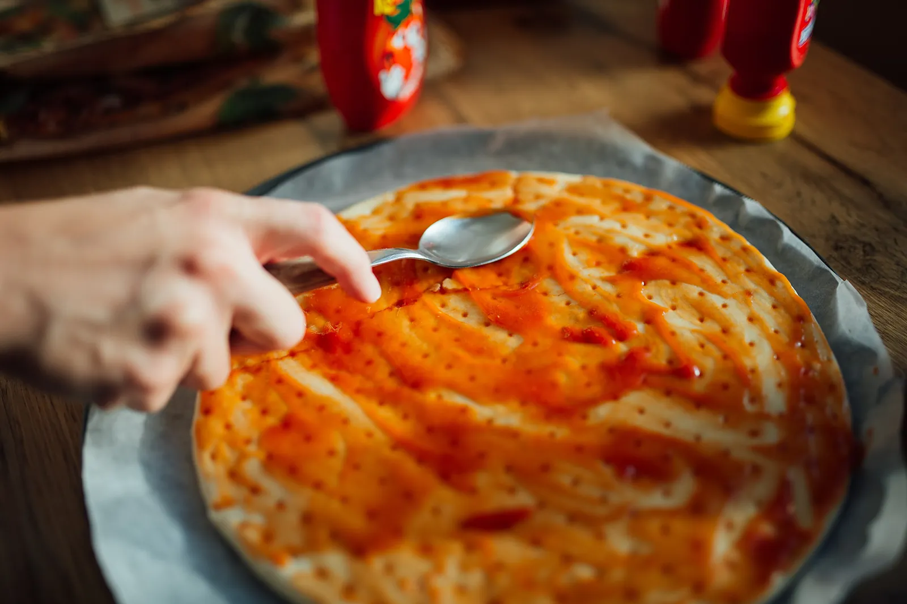
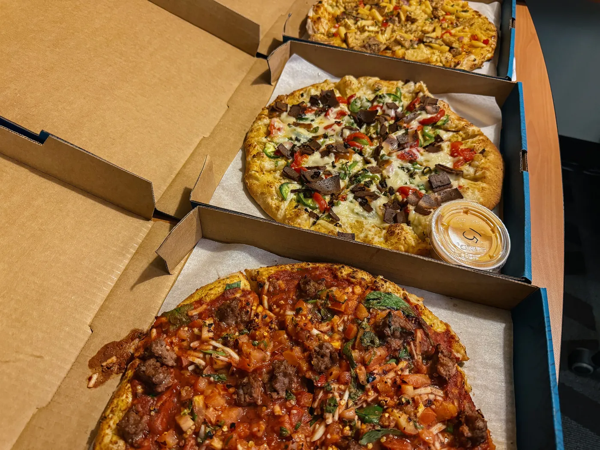

Food first
The pizza is the hero: real, hot, cheesy photography instead of cut-outs and banners.
A redesign concept by Zyqor Studio
What if ordering Domino's felt as good as the first bite? Real food photography, one-thumb choices and a tracker you can read from across the room.

01 · The builder
Pick a size, pick a pizza, drop on extras. Every choice is a real photo, so you see what you get.

Photo: Kurt Kaiser (CC0)
Concept demo: nothing is ordered and no prices are shown.
02 · The tracker
Four big steps, one moving line and a photo of what is happening right now. No tiny status text to squint at.

Demo timeline: not live order data.
03 · Design notes
The pizza is the hero: real, hot, cheesy photography instead of cut-outs and banners.
On phones every choice sits in the lower half of the screen, with a sticky order button.
Warm paper, deep ocean blue and a baked-crust orange. The famous blue and red stay in the logo.
